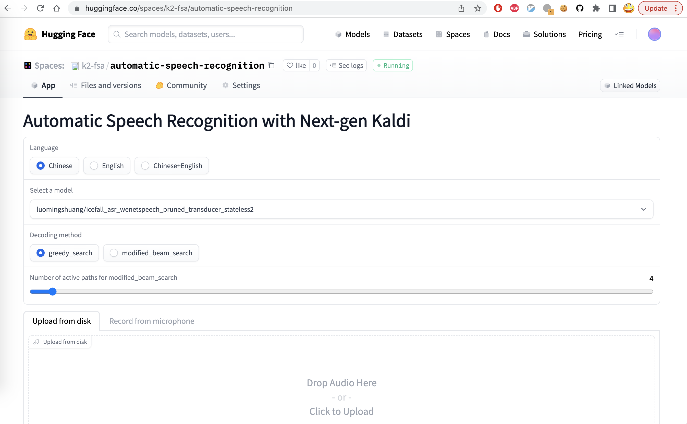

Run Next-gen Kaldi in your browser
This page describes how to try Next-gen Kaldi in your browser.
Hint
You don’t need to download or install anything. All you need is a browser.
The server is running on CPU within a docker container provided by Huggingface and you use a browser to interact with it. The browser can be run on Windows, macOS, Linux, or even on your phone or iPad.
You can upload a file for recognition, record your speech via a microphone from within the browser and submit it for recognition, or even provider an URL to an audio file for speech recognition.
Now let’s get started.
Visit our Huggingface space
Start your browser and visit the following address:
https://huggingface.co/spaces/k2-fsa/automatic-speech-recognition
and you will see a page like the following screenshot:
You can:
Select a language for recognition. Currently, we provide pre-trained models from icefall for the following languages:
Chinese,English, andChinese+English.After selecting the target language, you can select a pre-trained model corresponding to the language.
Select the decoding method. Currently, it provides
greedy searchandmodified_beam_search.If you selected
modified_beam_search, you can choose the number of active paths during the search.Either upload a file or record your speech for recognition.
Click the button
Submit for recognition.Wait for a moment and you will get the recognition results.
The following screenshot shows an example when selecting Chinese+English:

In the bottom part of the page, you can find a table of examples. You can click
one of them and then click Submit for recognition.

YouTube Video
We provide the following YouTube video demonstrating how to use https://huggingface.co/spaces/k2-fsa/automatic-speech-recognition.
Note
To get the latest news of next-gen Kaldi, please subscribe the following YouTube channel by Nadira Povey:
Other Huggingface spaces
ASR + WebAssembly + sherpa-ncnn: Please see Huggingface Spaces (WebAssembly)
TTS: Please see: https://huggingface.co/spaces/k2-fsa/text-to-speech